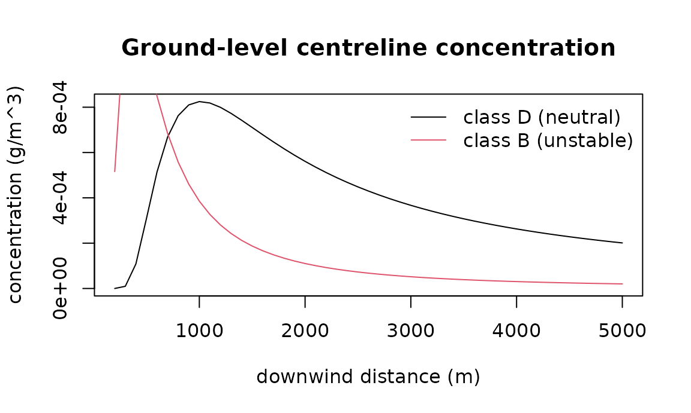

Air pollution: dispersion, health burden, equity, and the footprint of the computation
Source:vignettes/air-pollution-and-health.Rmd
air-pollution-and-health.RmdThree questions about air pollution recur in administrative and public-health work: where does a plume go, how many deaths does a concentration imply, and who bears it. A fourth has become part of reproducible research: what did the computation itself cost in electricity and carbon. This vignette walks the four tools, each with the formula it implements and the paper it comes from, on small offline examples.
1. Where the plume goes
Dispersion coefficients
The Gaussian plume model needs the horizontal and vertical spread of the plume as a function of downwind distance and atmospheric stability. Pasquill’s stability classes A (very unstable) to F (very stable) with Briggs’s (1973) curve fits are the standard parameterisation; rural and urban coefficients differ because cities are rougher and warmer.
Plume rise
A hot, fast stack gas rises before it levels off. Briggs’s plume-rise equations give the buoyancy flux, the final rise and the distance at which it is reached; before that distance the plume is still rising:
r <- briggs_plume_rise(c(100, 500, 2000), u = 4, diameter = 1, exit_velocity = 12,
stack_temp = 420, ambient_temp = 285)
r$flux
#> [1] 9.45594
r$final_rise
#> [1] 28.88281
r$rise
#> [1] 18.22335 28.88281 28.88281Ground-level concentration
With the effective height (stack height plus rise), the plume equation gives the concentration at any receptor; ground reflection is included, and a mixing lid adds image terms. Concentration first rises with distance as the plume reaches the ground, then falls as it dilutes:
x <- seq(200, 5000, by = 100)
h <- 30 + r$final_rise
c_d <- gaussian_plume(q = 100, u = 4, h = h, receptors = cbind(x, 0, 0), stability = "D")
c_b <- gaussian_plume(q = 100, u = 4, h = h, receptors = cbind(x, 0, 0), stability = "B")
plot(x, c_d, type = "l", xlab = "downwind distance (m)", ylab = "concentration (g/m^3)",
main = "Ground-level centreline concentration")
lines(x, c_b, col = 2)
legend("topright", c("class D (neutral)", "class B (unstable)"), col = 1:2, lty = 1, bty = "n")
gaussian_puff() is the instantaneous-release
counterpart; advection_diffusion_2d() and
lagrangian_particles() are grid and particle models for
cases the Gaussian assumptions (steady wind, flat terrain) do not fit.
The particle model is deterministic from its seed and takes any normal
generator through normals=, so another package’s random
stream can be reproduced exactly.
p <- lagrangian_particles(n = 500, x0 = 0, y0 = 0, u = 1, v = 0, kx = 0.5, ky = 0.5,
dt = 1, n_steps = 50, seed = 1, grid = c(0, 100, -30, 30, 20, 12))
c(mean_x = p$mean_x, mean_y = p$mean_y)
#> mean_x mean_y
#> 49.981881150 0.0095624242. From concentration to deaths
Concentration-response
The relative risk of death at an ambient concentration, relative to a counterfactual concentration below which no excess risk is assumed. The all-cause PM2.5 function is log-linear with the pooled cohort estimate of the WHO 2021 guideline review, RR 1.08 per 10 µg/m³ (Chen and Hoek 2020); NO2 uses RR 1.02 per 10 µg/m³ (Huangfu and Atkinson 2020). The cause-specific PM2.5 functions are the Integrated Exposure-Response curves of Burnett et al. (2014), which saturate at high concentrations:
crf_pm25(12)$rr
#> [1] 1.048873
exp(log(1.08) * (12 - 5.8) / 10) # the same, by hand
#> [1] 1.048873
crf_pm25(12, outcome = "ihd")$rr
#> [1] 1.553634
crf_no2(25)$rr
#> [1] 1.03015A vector of exposures gives the mean RR and keeps the per-unit values:
Attributable fraction and avoided deaths
Levin’s population attributable fraction turns a relative risk and an exposure prevalence into the share of deaths the exposure accounts for; the BenMAP health-impact function gives the deaths avoided by a counterfactual reduction:
attributable_fraction(crf_no2(25)$rr, exposure_prevalence = 1)
#> [1] 0.02926711
mortality_displaced(exposure_delta = 10, population = 1e6, baseline_rate = 0.008,
beta_per_unit = log(1.02) / 10)
#> [1] 156.8627The burden chain
pollution_burden() chains concentration-response,
attributable fraction and the baseline case count, as the Global Burden
of Disease risk-factor estimates do:
b <- pollution_burden(exposure_mean = 25, exposure_prevalence = 1, baseline_rate = 0.008,
population = 1e6, pollutant = "NO2")
c(rr = b$extra$rr, paf = b$paf, attributable = b$attributable_cases)
#> rr paf attributable
#> 1.03014950 0.02926711 234.13691783
b$citation
#> [1] "Huangfu & Atkinson (2020) Environ Int 144:105998; WHO (2021) Global AQ Guidelines; Rothman et al. (2008) section 5"Per area, sorted worst first:
areas <- data.frame(fsa = c("M6H", "M5V", "M4W", "M1B"), exposure = c(28, 18, 15, 24),
population = c(40000, 60000, 25000, 70000), baseline_rate = 0.008)
pollution_burden_by_area(areas)
#> fsa exposure population baseline_rate rr paf attributable_cases
#> 1 M1B 24 70000 0.008 1.028112 0.027342904 15.312026
#> 2 M6H 28 40000 0.008 1.036288 0.035016937 11.205420
#> 3 M5V 18 60000 0.008 1.015968 0.015717276 7.544292
#> 4 M4W 15 25000 0.008 1.009950 0.009852457 1.970491
#> baseline_cases
#> 1 560
#> 2 320
#> 3 480
#> 4 2003. Who bears it
The concentration index of Wagstaff, Paci and van Doorslaer (1991) measures whether exposure concentrates among lower- or higher-income people: it is twice the covariance of exposure with the fractional income rank, divided by mean exposure. Negative means the poor bear more.
d <- data.frame(exposure = c(30, 27, 22, 18, 14), income = 1:5)
e <- exposure_concentration_index(d, "exposure", "income")
e$concentration_index
#> [1] -0.1477477
e$interpretation
#> [1] "CI = -0.1477. Pro-poor exposure burden: lower-income individuals bear disproportionately higher pollution."4. Estimating the exposure effect from your own data
When individual or area data with confounders are available, the
partially linear model of Chernozhukov et al. (2018) estimates the
exposure effect with cross-fitted nuisance functions, so the confounder
adjustment cannot overfit the same rows it is evaluated on.
exposure_response_plr() adds a percentile bootstrap for a
sensitivity interval. The default estimator uses ordinary-least-squares
nuisances; any estimator with the same interface can be passed.
set.seed(1)
n <- 300
sim <- data.frame(income = rnorm(n), density = rnorm(n))
sim$no2 <- 20 - 2 * sim$income + 3 * sim$density + rnorm(n)
sim$asthma_rate <- 5 + 0.3 * sim$no2 - 0.5 * sim$income + rnorm(n)
fit <- exposure_response_plr(sim, outcome = "asthma_rate", exposure = "no2",
confounders = c("income", "density"), n_bootstrap = 30)
c(ate = fit$ate, lower = fit$ci_lower_bs, upper = fit$ci_upper_bs)
#> ate lower upper
#> 0.2464713 0.1437978 0.3132657The true coefficient is 0.3 and the interval covers it.
5. The whole pipeline, with an assumption log
verify_pollution() runs the chain end to end and records
every assumption it checked, so a report says not only the number but
the conditions under which it holds. Synthetic demo data stand in
here:
r <- verify_pollution("no2", demo = TRUE, region = "demo", years = "2024")
r$status
#> [1] "ok"
cat(pollution_report_text(r))
#> ==================================================================
#> verify-pollution -- NO2 -> all_cause_mortality
#> region: demo
#> years: 2024
#> data: demo (synthetic)
#> ==================================================================
#>
#> Inputs
#> exposure mean: 24.261
#> exposure prevalence:0.981
#> baseline rate/100k: 500.00
#> population: 1e+06
#> reference conc: 10
#>
#> Assumption log
#> [PASS] exposure finite and non-negative -- mean 24.26113743 vs ref 10
#> [PASS] prevalence in [0,1] -- exposure_prevalence=0.981
#> [PASS] baseline_rate finite and non-negative -- baseline_rate=500 per 100k per year
#> [PASS] population finite and positive -- population=1e+06
#> [PASS] reference finite and non-negative -- reference=10
#> [PASS] pollutant supported by the CRFs -- Current CRFs: NO2 (log-linear), PM2.5 (log-linear all-cause; Burnett IER for IHD and stroke). Other pollutants reject.
#>
#> Concentration-response
#> RR: 1.0286
#> source: Huangfu & Atkinson (2020) Environ Int 144:105998; WHO (2021) Global AQ Guidelines
#>
#> Attributable fraction (PAF): 0.0273
#>
#> Mortality displaced
#> expected avoided deaths: 136.6
#>
#> Burden of pollution
#> attributable deaths: 136.7
#>
#> Equity analysis
#> concentration index: -0.0647
#>
#> STATUS: okAn input that violates an assumption stops the pipeline and says why, with a non-zero exit status for scripts:
bad <- verify_pollution("pm25", exposure_mean = 3, exposure_prevalence = 0.5)
bad$status
#> [1] "ok"
attr(bad, "exit_status")
#> [1] 0A CSV with an exposure column (and optionally
income) replaces the demo data; a NAPS pull with
value in ppb is converted to µg/m³ at 1.88 for NO2.
6. What did this computation cost?
Computation uses electricity, and electricity has a carbon intensity.
compute_footprint() reports both for any expression, two
ways. On Linux with readable RAPL counters it measures the CPU
package energy, as codecarbon does. Everywhere else it models
energy with the Green Algorithms formula (Lannelongue, Grealey and
Inouye 2021),
.
Every default that stood in for a measurement is listed:
rapl_available()
#> [1] FALSE
fp <- compute_footprint(sum(sqrt(seq_len(3e5))), location = "CA-ON", cpu_power_w = 45,
memory_gb = 16)
print(fp)
#> Computation footprint (modelled): 0.003 s wall, 0.003 s CPU, utilisation 0.25 (process) on 4 cores
#> energy: 1.43e-08 kWh (cpu 9.38e-09, memory 4.97e-09)
#> CO2e: 1.3e-06 g at 90.97 gCO2e/kWh (Canada, Ontario, 2024)
fp$assumptions
#> character(0)Utilisation: measured, per process or per machine
The Green Algorithms calculator asks the user for the utilisation
and defaults to 1; codecarbon measures it in one of two tracking modes.
compute_footprint() measures it too, in the same two ways.
usage = "process" (the default) is this R process’s own CPU
time, children included, over wall time and cores, so an idle wait is
not charged as computation. usage = "machine" is the whole
machine’s busy share over the run, read from /proc/stat on
Linux, for the case where the computation is all the machine is doing or
the question is what the machine drew; where there is no
/proc/stat the process figure is used and the assumptions
say so. A number fixes it, as the calculator does.
load_curve chooses how power follows utilisation: linearly
(Green Algorithms) or along codecarbon’s curves, a 10% floor for a
process and
for a machine, so a figure can be made comparable with either tool:
busy <- function() sum(sqrt(seq_len(2e5)))
a <- compute_footprint(busy(), location = "CA-ON", cpu_power_w = 45, memory_gb = 16)
b <- compute_footprint(busy(), location = "CA-ON", cpu_power_w = 45, memory_gb = 16,
usage = "machine", load_curve = "codecarbon")
rbind(process_linear = c(usage = a$usage, cpu_kwh = a$energy_kwh$cpu),
machine_codecarbon = c(usage = b$usage, cpu_kwh = b$energy_kwh$cpu))
#> usage cpu_kwh
#> process_linear 0.3333333 1.25e-08
#> machine_codecarbon 0.3333333 2.50e-08
b$usage_mode
#> [1] "machine"The grid: the latest year, every country, offline
The carbon intensity comes from a table bundled with the package, so nothing is fetched and it works in any country: every country at the latest year Our World in Data publishes from Ember’s yearly electricity data (2024 or 2025 at this release), sub-national zones from Electricity Maps’ 2024 yearly data as redistributed by Green Algorithms (Canadian provinces, US balancing authorities, Australian states, Indian and Japanese regions, …), and the world average. Each row carries its year and source, so a report can cite them. A location is matched by code, alpha-3 code or name; an unknown zone falls back to its country and says so; a number of your own is accepted when you have a better figure:
carbon_intensity("CA-ON")[c("g_per_kwh", "year", "source")]
#> $g_per_kwh
#> [1] 90.97
#>
#> $year
#> [1] 2024
#>
#> $source
#> [1] "Electricity Maps (2025). Canada 2024 Yearly Carbon Intensity Data (Version January 27, 2025). Electricity Maps (via Green Algorithms data v3.1)"
carbon_intensity("Kenya")[c("location", "g_per_kwh", "year")]
#> $location
#> [1] "KE"
#>
#> $g_per_kwh
#> [1] 95.44
#>
#> $year
#> [1] 2025
carbon_intensity("CA-XX")$note
#> [1] "no row for zone CA-XX; its country CA used"
tab <- carbon_intensity_table()
nrow(tab)
#> [1] 379
table(nchar(tab$location) == 2, tab$year)[, c("2024", "2025")]
#>
#> 2024 2025
#> FALSE 156 3
#> TRUE 125 91With location = NULL (the default) the location is
detected offline, in order, from the RMBL_LOCATION
environment variable, codecarbon’s
CODECARBON_COUNTRY_ISO_CODE, the system time zone
(America/Toronto is Canada, Asia/Kolkata
India) and the locale, and the detection is written into the
assumptions; when nothing is found the world average is used and the
result says so, so one country’s grid is never silently applied to
another’s computation:
detect_location()
#> $location
#> [1] "WORLD"
#>
#> $method
#> [1] "fallback, no location found in environment, time zone or locale"
detect_location(env_location = "", codecarbon_location = "", tz = "Asia/Kolkata")
#> $location
#> [1] "IN"
#>
#> $method
#> [1] "system time zone Asia/Kolkata"
compute_footprint(1 + 1, cpu_power_w = 45, memory_gb = 16)$assumptions[1]
#> [1] "location WORLD via fallback, no location found in environment, time zone or locale"For a long analysis the figures become meaningful; the equivalents are the two the Green Algorithms calculator prints:
footprint_equivalents(fp$co2e_g * 1e4) # if this ran ten thousand times
#> $car_km
#> [1] 7.455208e-05
#>
#> $tree_months
#> [1] 1.42275e-05
#>
#> $sources
#> car
#> "175 gCO2/km, European passenger car (Green Algorithms context.csv)"
#> tree
#> "917 gCO2 per tree-month (Green Algorithms context.csv)"Cross-checked against codecarbon. On the same
8-second CPU-bound workload with the same forced inputs (65 W CPU, 16 GB
at 0.3725 W/GB), codecarbon 3.3.1 and compute_footprint()
charged the memory identically (5.96 W) and the CPU within 8%;
load_curve = "codecarbon" reproduces codecarbon’s
power-from-load curves, so what remains of the difference is the load
measurement itself (codecarbon samples it during the run, this function
integrates the CPU time). The carbon intensity they applied to Canada
differed (170 g/kWh from codecarbon’s 2023 Our World in Data figure;
190.7 g/kWh from the 2025 figure bundled here), which is the point of
carrying the year with every row: grid intensities move, and a report
should cite the year of the one it used. CodeCarbonR on CRAN wraps the
same Python tracker through reticulate; this function needs no Python
and no network.
What this does and does not cover. The measured mode
reads the CPU packages only; memory, storage, network and GPU are not in
the RAPL counters (GPU power needs the vendor library; this package has
no GPU dependency). The modelled mode inherits Green Algorithms’
assumptions: memory draws 0.3725 W/GB regardless of how it is populated
(codecarbon v3 moved to a per-DIMM heuristic for the same reason), and
the grid intensity is an annual average, not the hour’s. Embodied
emissions of the hardware are excluded, as in both reference tools. The
place to improve a figure is the inputs: a measured
cpu_power_w for your CPU, the actual memory_gb
your job used, the data centre’s pue, and, if you have it,
the hour’s carbon intensity passed as a number.
References
Briggs (1973). Diffusion estimation for small emissions. ATDL 79. Briggs (1975). Plume rise predictions. AMS. Burnett et al. (2014). An integrated risk function for estimating the global burden of disease attributable to ambient fine particulate matter exposure. EHP 122(4). Chen, Hoek (2020). Long-term exposure to PM and all-cause and cause-specific mortality. Environment International 143. Chernozhukov et al. (2018). Double/debiased machine learning. Econometrics Journal 21(1). Huangfu, Atkinson (2020). Long-term exposure to NO2 and O3 and all-cause and respiratory mortality. Environment International 144. Lannelongue, Grealey, Inouye (2021). Green Algorithms: quantifying the carbon footprint of computation. Advanced Science 8(12), 2100707. Ember (2026). Yearly Electricity Data, via Our World in Data, https://ourworldindata.org/grapher/carbon-intensity-electricity. Electricity Maps (2025). 2024 Yearly Carbon Intensity Data, via Green Algorithms data v3.1. Levin (1953). The occurrence of lung cancer in man. Acta Unio Internationalis Contra Cancrum 9. Wagstaff, Paci, van Doorslaer (1991). On the measurement of inequalities in health. Social Science and Medicine 33(5). WHO (2021). Global Air Quality Guidelines.